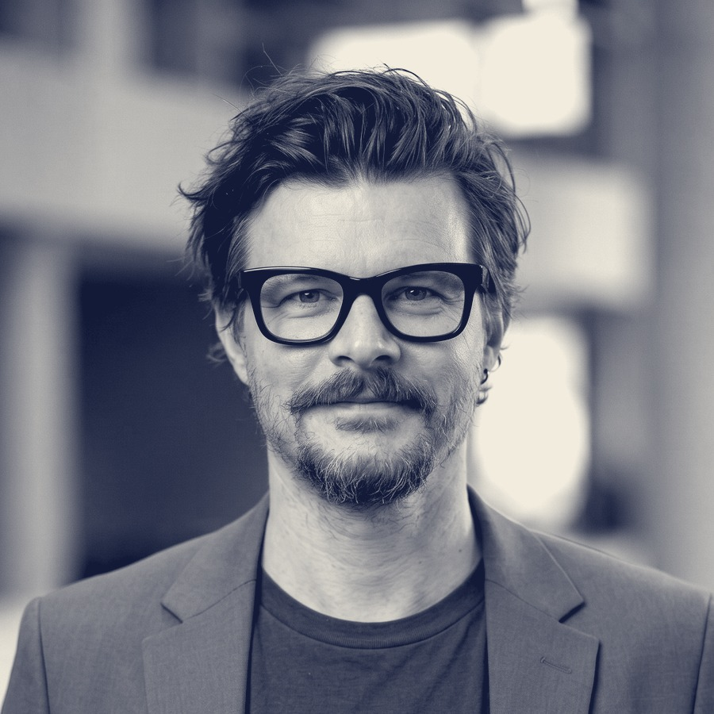

Global Marketing Leader — 12+ years across enterprise and agency environments.

Eugenio Maddalena — Brussels, 2026
Certifications
- AI for Marketing Specialization — Emory University
- Artificial Intelligence & Innovation — Siemens AI Learning Path (Advanced)
- Microsoft Copilot for Business
- Official Google Ads Search Certification
- Accelerating B2B Marketing — Forrester
- SCRUM Basics — Project Management Institute
Languages
- English, Italian, French — native
- Dutch — beginner
I lead global marketing and communications for enterprise organizations — demand generation, performance marketing, account-based marketing, event marketing, and executive communications. Over 12+ years across global enterprises and top agencies, I've run integrated campaigns for major international brands, built editorial governance for large-scale communications programs, and designed and shipped an AI-powered communications system recognized with 1st place in Siemens' NEO.CM Artificial Intelligence Innovation Masterclass.
Before marketing, I studied Sociology of Media & Communication (Federico II, Naples) — a thesis on how media narratives get constructed and whose voice gets amplified or erased. That training is where the method on this site comes from: a habit of asking who benefits from a belief before accepting it, then checking it against what I've actually built and shipped.
I'm not interested in following whatever's trending in marketing or AI. I'm interested in the harder question underneath it — and I write about that question as often as I can back it with something real.
Global Marketing & AI Innovation Manager, Siemens Digital Industries Software. Open to Global Marketing, Demand Generation, or Marketing Communications leadership conversations.
Full professional history
Included in full for anyone who wants it — recruiters, hiring teams, due diligence. The method and the writing above are the actual pitch; this is the paper trail behind it.
Experience
Global Marketing & AI Innovation Manager
Siemens Digital Industries Software
- Lead global digital marketing initiatives across paid search, paid social, ABM, event marketing, and executive communications, driving audience engagement and demand generation at enterprise scale.
- Delivered +125% Paid Search and +468% Paid Social traffic growth through data-driven, test-and-learn marketing strategies.
- Reduced Cost per Lead by 40% through campaign optimization, performance measurement, and continuous improvement initiatives.
- Designed and built the Realize LIVE AI Comms Agency, an AI-powered communications system supporting event planning, content creation, and stakeholder enablement — recognized with 1st place in the Siemens NEO.CM Artificial Intelligence Innovation Masterclass.
- Led adoption of generative and agentic AI approaches across marketing and communications teams, translating a single successful framework into a scalable model replicated across international teams.
Digital Strategist — Social Media & Inbound Marketing
Partenamut
- Defined inbound marketing and demand generation strategies across owned and earned digital channels.
- Built lead generation programs leveraging SEO, content marketing, and social media.
- Managed editorial planning and content governance processes.
- Delivered performance reporting and optimization recommendations to stakeholders.
- Led cross-functional collaboration between content, digital, and communication teams.
- Developed social acquisition and nurturing strategies supporting affiliate growth objectives.
Digital, Social Media & Integrated Campaign Manager
Publicis Groupe (ended due to international relocation)
- Managed integrated multi-channel marketing campaigns across digital, social, broadcast, print, and outdoor media for major international brands.
- Coordinated campaign localization activities between international stakeholders and local markets.
- Oversaw project delivery, timelines, budgets, and performance measurement.
- Delivered integrated campaign programs for Renault Italy in collaboration with marketing leadership.
Social Media & Influencer Marketing Specialist
Istituto Nazionale per la Comunicazione
- Developed digital communication and influencer engagement strategies for national and international brands.
- Managed stakeholder, media, and influencer relationships across multiple campaigns.
- Delivered digital marketing training and knowledge transfer initiatives.
- Applied experimentation and A/B testing methodologies to optimize campaign performance.
- Successfully managed complex online reputation and crisis communication initiatives.
- Generated an estimated reach of 16.4 million through the Pasta World Championship influencer campaign.
Digital Marketing & Social Media Specialist
Xister Reply (maternity cover)
- Delivered digital marketing and communication programs across digital channels and social platforms.
- Managed content operations and community engagement for international brands.
- Executed performance marketing and native advertising initiatives.
- Analyzed campaign results and implemented data-driven optimization strategies.
- Led delivery coordination for Nestlé Fitness LATAM.
- Increased Instagram audience growth by 195% for Mondo Convenienza.
Digital Marketing & Communications Consultant
Info Srl
- Advised public and private sector organizations on digital communications, social media strategy, content marketing, and emerging digital trends.
- Managed end-to-end marketing and communications projects, ensuring delivery within scope, budget, and timelines.
- Developed and delivered digital training and educational initiatives, including a webinar program for small and medium-sized businesses in collaboration with Google Italy.
- Supported executive and event communications through real-time social media coverage for major organizations, including Cisco and ForumPA.
- Increased visibility and engagement for Cisco's native advertising initiatives, contributing to a 40.8% growth in views within eight months.
- Contributed to the delivery of a large-scale data and digital transformation project for the United Nations.
Selected AI Projects
Realize LIVE AI Comms Agency
- Designed and developed an AI-powered communications assistant for Siemens' flagship customer event.
- Automated content generation, messaging consistency, stakeholder support, and reporting activities.
- Recognized as the winning project in the Siemens NEO.CM AI Innovation Masterclass.
AI Marketing Scale Program
- Supported replication of AI communication and marketing frameworks across multiple international marketing teams.
- Reduced manual effort and improved content production efficiency.
Education
Bachelor's Degree in Sociology of Media & Communication
Coursework: Media & Communication, Digital Culture & Society, Audience Behavior, Public Discourse & Media Analysis, Research Methodologies.
Academic thesis: "Building the enemy: racism and misrepresentation in Media."
Skills
AI & Automation
- Agentic AI
- Prompt Engineering
- AI Workflow Design
- Generative AI Adoption
- Knowledge Management
- Marketing Automation
Marketing
- Demand Generation
- Account-Based Marketing
- Social Media
- Executive Communications
- Event Marketing
- Growth Marketing
Data & Analytics
- Power BI
- KPI Measurement
- Reporting Automation
- Campaign Analytics
Leadership
- Stakeholder Management
- Training & Enablement
- Global Team Collaboration
- Change Management
Contact
Open to conversations with recruiters, peers, and anyone who disagrees with something in the case log.